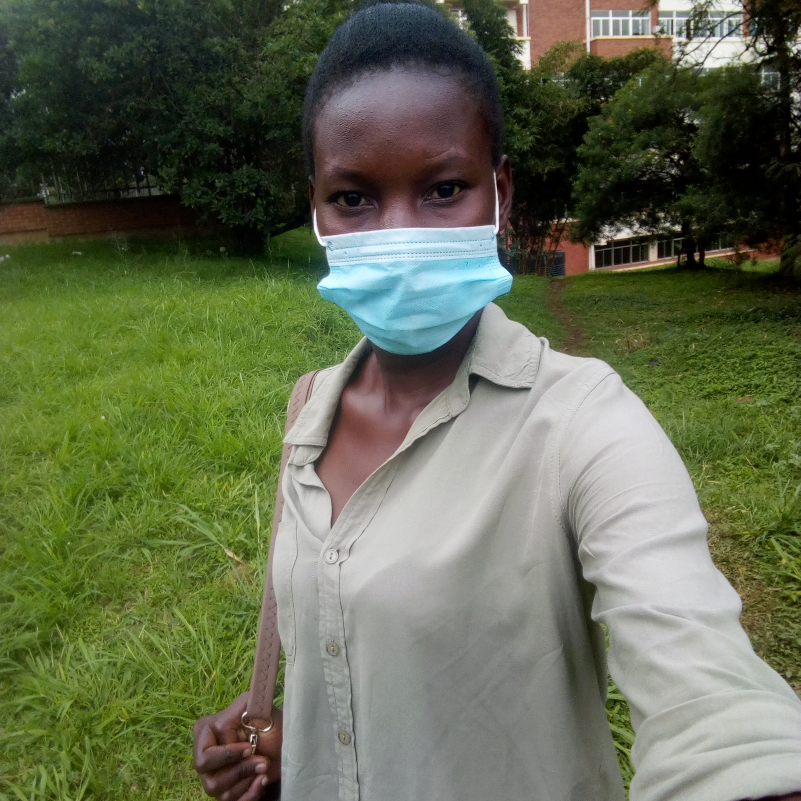

TUKOORE FLAVIA SARAH During the data collection process i got a chance to experience and learn the following. I learnt that there is a need of being patient and flexible while collecting data from market vendors. This is because some customers would come to purchase commodities from vendors and we had to patiently wait for them to first finish attending to the vendors. I also learnt that there is a need to accept change since change is part of life just as the market vendors who also accepted to obey sops and also close early especially during the pandemic. I also got to realise that the pandemic has not only affected me negatively as a person but also the market vendors who have got to deal with issues of increased transport. |
MUGERWA LAWRENCEMy name is Mugerwa Lawrence, I got a chance to experience many
things during the brief interview I had with market vendors of
kasubi market. In my life, I had never interviewed someone
more so a person who is like a mom or dad to me. I felt like
it is not happening for sure, for someone older than me to lend
their ears and reply my questions with Love and Joy
I also got to know what market vendors are going through in this
COVID 19 pandemic to earn a living with increased transport
costs, observing SOPs and so on. I also got to know what some
people think about this pandemic, as some said that it doesn't
exist while others said they just do what government tells them
to do.
|
KADONDI DIANAH BRENDAHMy First Interview Experience With Market Vendor at kasubi market was educative. The interviewee were open and friendly. They faced common challenges from the pandemic outbreak for example: curfew, poverty to finance their businesses etc. |
NAKAYE MASTULLAHNever had I been to the market to interview market vendors, but I experienced how many different people welcome you when you are not are customer, some are harsh and some are polite but had to keep calm up to until we got what we wanted from them. For example when we reached at the chicken market vendors a lady told “Kayizzi” the chicken seller that we were going to sell him off or either we make him a cartoon but lucky enough he said “its all okay I have to help them, they are youths” |